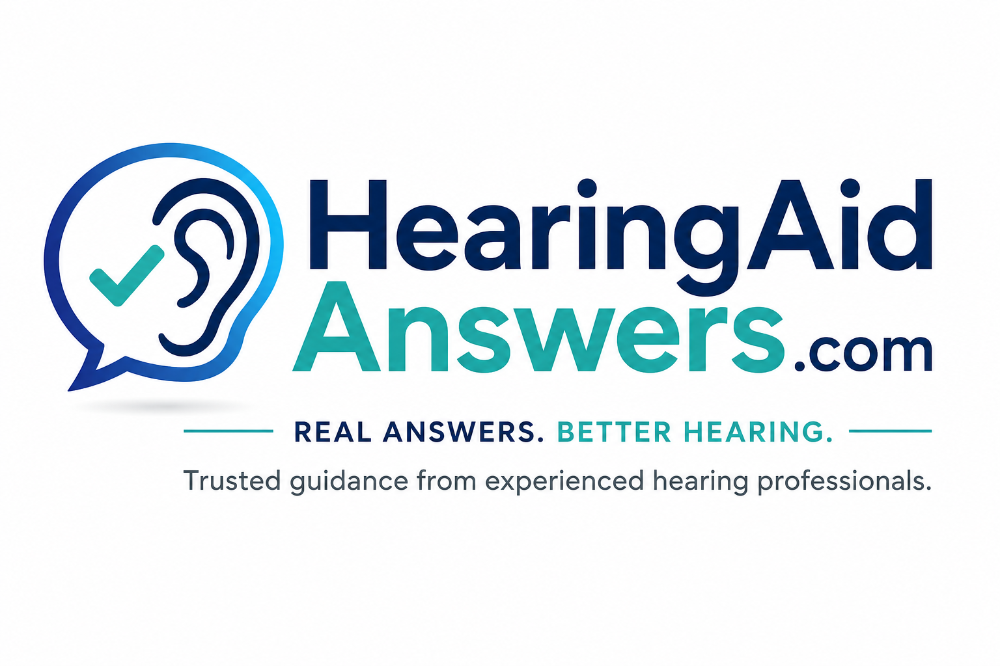

🔧 Troubleshooting
No sound, weak sound, cutting out, wax blockage and sudden device problems.
Start troubleshooting →
Practical help with troubleshooting, Bluetooth, cleaning, batteries, feedback, insurance questions and everyday hearing concerns.
No sound, weak sound, cutting out, wax blockage and sudden device problems.
Start troubleshooting →Pairing, streaming, phone calls and devices that will not stay connected.
Ask about your phone →Wax guards, domes, earmolds, microphones, chargers and maintenance.
Get cleaning help →Short battery life, charger lights, storage and rechargeable problems.
Check a charging problem →Why speech may remain unclear, especially in restaurants and groups.
Get personal guidance →Benefits, repairs, Medicare questions, networks and replacement decisions.
Ask a coverage question →This tool provides general troubleshooting, not medical diagnosis.
Ken is an experienced hearing instrument specialist who helps people solve hearing aid problems every day. Hearing Aid Answers was created to make reliable information easier to understand and use.
The goal is simple: help you understand what may be happening, what you can safely try, and when it is time to see a local hearing or medical professional.
“People should not need a technical manual and a decoder ring just to understand their hearing aids.”
— Ken, Hearing Instrument Specialist
A private virtual consultation can help with device troubleshooting, care questions, general insurance questions and deciding your next step.
15-minute virtual consultation
Request a ConsultationYou don’t have to figure it out alone.
Include the brand, model, device age, whether the problem affects one or both, and what you have already tried.